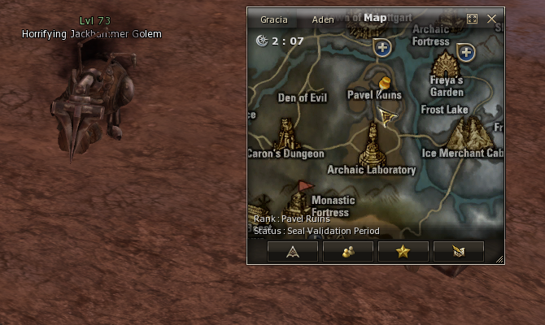
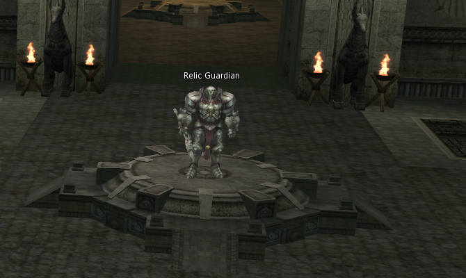
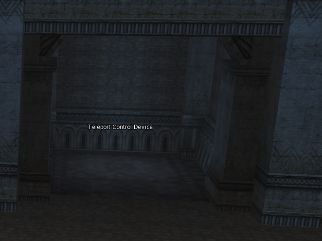
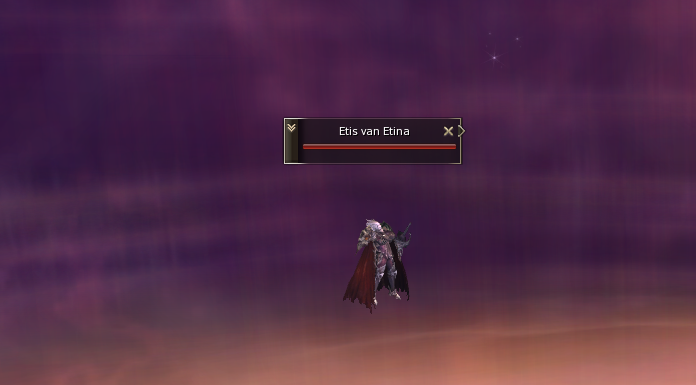

Seven Signs Parte 2
Quest Seven Signs (Parte 2)
Requerimiento: Nivel 81+
Npc de inicio: Wood
Reward: Forgotten Scroll 81+ - XP/SP (Ver Forgos)
*La cantidad de exp y sp depende de los rates del server
Recomendaciones
En esta quest hay que ir muchas veces al mismo lugar, se recomienda dejar un summoner en la parte de Beast Farm, esto nos ahorrará alrededor de 50% de tiempo en la quest.
1 - Seven Signs, Girl of Doubt
La quest la iniciamos en Priest Wood que instantáneamente nos enviará a la base secreta con el npc Franz, hablamos con él, le decimos que queremos iniciar la quest y nos enviará a Beast Farm.
En Beast Farm nos encontraremos con el npc que nos dejara entrar a la casa de Elcadia (La que nos acompañará en toda la quest).
*En este lugar es recomendable dejar el summoner.

Hablamos con Elcadia y nos dará la primera prueba que debemos pasar.
⚠️⚠️Nunca tiren soe dentro de la casa, siempre hablen con Elcadia para que los saque de la casa y recién ahí tiren soe. Esto es porque al entrar a la casa, estamos entrando a una instancia y si tiramos soe dentro, la instancia no se termina y nos puede bugear otras etapas de la quest.
Nos enviará a Pavel Ruis (Desde schuggart), tendremos que ir a los pozos y matar Cruel Pincer Golem y Horrifying Jackhammer Golem hasta conseguir 10 items.
*Puede que se tarde un poco ya que a este nivel veremos azules los bichos.

Volvemos con Elcadia, entregamos los ítems, hablamos con ella nuevamente y saldrán npcs que tendremos que matar.
Hablamos nuevamente con Elcadia y nos enviará a Hardin's Academy (Giran > Hardin's Private Academy).
Hablamos con Hardin y nos enviará de nuevo con Elcadia.
*A este punto ya notaran como es la quest, ir a distintos lugares y volver a reportarse con Elcadia, siempre que la quest lo diga, tendremos que ir a Beast Farm.
Aquí terminamos la primera parte, nos recompensará con experiencia. Para continuar la quest, hablamos de nuevo con Elcadia.
2 - Seven Sings, Forbidden Book of the Elmore-Aden Kingdom
Después de hablar con Elcadia, nos enviará a Rune, a hablar con Sophia, ella nos meterá a una instancia igual a la sala donde nos encontrábamos.
Dentro tendremos que hablar con ella nuevamente, con elcadia que se encuentra ahí, con Sophia de nuevo, con Elcadia y de nuevo con Sophia. (Básicamente habla con cualquiera que tenga el pergamino en la cabeza).
Ella nos ofrece entrar a la biblioteca, seleccionamos Login y nos teletransportará.
Aquí nos encontraremos con muchas librerías, tenemos que buscar la que nos de el libro que buscamos, al encontrarlo hablamos con elcadia y hablamos con Sophia para salir.
(No es item de quest, está en el inventario normal)
Hablamos nuevamente con Sophia para salir a Rune.
*Para saber si salimos a Rune o seguimos en la instancia no tenemos que ver a Elcadia y ver el resto de los NPC que normalmente están ahí.
Volvemos con Elcadia.
Aquí terminamos la segunda parte, nos recompensará con experiencia. Para continuar la quest, hablamos de nuevo con Elcadia
3 - Seven Sings, To the Monastery of Silence
Después de hablar con Elcadia, nos enviará a Monastery of Silence (Rune/Goddard > Monastery of silence).
⚠️Los npc que se encuentran en Monas no son agresivos a menos que utilicemos arma, así que para el viaje desde la entrada es recomendable desequiparselá.
Hablamos con el Globe y nos enviará a una nueva instancia.
Hablamos con el Director Eris's Evil Thoughts quien nos enviará a nuestra primera prueba.
En este lugar tendremos que dirigirnos a los 4 dispositivos de colores, dentro de ellos tendremos una sala similar, donde tendremos 4 podios con libros, al encontrar el indicado nos dará un libro y nos dirigimos al npc del medio a responder un examen.
La ubicación de los libros y las respuestas siempre son las mismas.
Teleport Control Device verde > Podio Este > Respuesta correcta: Fintezza
Teleport Control Device azul > Podio Norte > Respuesta correcta: Silence
Teleport Control Device rojo > Podio Norte > Respuesta correcta: Monastery of silence
Teleport Control Device naranja > Podio Este > Respuesta correcta: Frintezza
*Los colores varían dependiendo del daltonismo de la persona.
*¿Cómo saber dónde está el norte?
La flechita del radar apunta al norte.
Podio:
Ejemplo de examen/test:
Una vez completados los cuatro test, hablamos con el Relic Guardian, quien nos mostrará un juego de luces, hablamos nuevamente con él y nos sacará de la instancia.

Hablamos nuevamente con Eris's Evil Thoughts y completamos esta parte de la quest.
Aquí terminamos la tercera parte, nos recompensará con experiencia. Para continuar la quest, hablamos de nuevo con Eris's Evil Thoughts.
4 - Seven Sings, Solina Tomb
Eris's Evil Thoughts nos enviará a una nueva sala, donde tendremos que completar distintas tareas.
En las salas 1, 2, 3 y 4 hay armas custodiadas por Npcs, tendremos que ir y agarrarlas, no es necesario matar los bichos, pero algunos son agresivos.
Al tener las cuatro armas, tendremos que ir a las salas 5, 6, 7 y 8 y colocar las armas en estos dispositivos.
Logrando estos dos primeros pasos, seremos capaces de matar a los jefes de las salas 9, 10, 11 y 12.
Una vez matado los cuatro guardianes, saldrá una animación, confirmando que completamos el objetivo.
Ahora nos dirigimos al Teleport Control Device en el centro y seleccionamos la opción “To go to the room, Solina”

Nos enviará a esta sala.
⚠️Cuidado, después de este paso saldrán muchos Npc que tendremos que matar.
Una vez que hablemos con Tomb of the Saintess saldran muchos guardias y ángeles, los cuales tendremos que matar.
Tendremos que matar los cuatro Guardian of the Tomb.
Una vez que terminamos de matar los NPC, se abrira una pared, hablamos con el Teleport Device y nos enviará a la siguiente sala.

Aquí nos encontraremos a Solina’s Evil Thoughts, hablamos con ella y nos sacará de la instancia.
Nuevamente nos encontramos con Eris's Evil Thoughts para completar la quest.
Aquí terminamos la cuarta parte, nos recompensará con experiencia. Para continuar la quest, hablamos de nuevo con Eris’s Evil Thoughts.
5 - Seven Sings, One Who Seeks the Power of the Seal
Al hablar con Eris’s Evil Thoughts. nos mostrará una animación, presentándonos la pelea final.
*En esta parte puede que nos encontremos un bug, donde el personaje no se mueve y no podemos hacer nada, es perfectamente normal, solo hay que esperar y nos teletransportará a la pelea final.
Una vez aquí tendremos que pelear contra Etis van Etina, no es una pelea complicada, puede que te tire stun pero cae facilmente.

Una vez terminada esta pelea hablamos con Elcadia para salir de ahí.
⚠️Recomendable sacarse el arma ya que nos teletransporta al medio de Monstery of SIlence.
Volvemos con Elcadia en Beast Farm.
Ella nos enviará con Hardin en Hardin’s Private Academy
Él nos enviará con Priest Wood para el último paso de la quest.
Nos enviará a la sala secreta de Franz, que nos espera con nuestra recompensa.

¡Felicitaciones!
Completaste la última quest de esta cadena de misiones, como recompensa ganaste mucha cantidad de experiencia y un Certificate of Down.
Al salir, podemos hablar nuevamente con el priest Wood, que nos dara la opcion de cambiarle el certificado por uno de los siguientes Forgotten Scrolls:
| Forgotten Scroll | Clases | |
|---|---|---|
| Forgotten Scroll - Anti-Magic Armor | *Phoenix Knight *Hell Knight *Eva's Templar *Shillien Templar |
|
| Forgotten Scroll - Deflect Magic | *Phoenix Knight *Hell Knight *Eva's Templar *Shillien Templar *Sword Muses *Spectral Dancers |
|
| Forgotten Scroll - Sixth Sense | *Phoenix Knight *Hell Knight *Eva's Templar *Shillien Templar *Sword Muses *Spectral Dancers *Adventurer *Wind Rider *Ghost Hunter *Trickster *Soul Hound *Judicator |
|
| Forgotten Scroll - Expose Weak Point | *Duelist *Grand Khavatari *Dreadnought *Titan *Fortune Seeker *Maestro *Doombringer *Adventurer *Wind Rider *Ghost Hunter *Soul Hound *Judicator |
|
| Forgotten Scroll - Hide | *Adventurer *Wind Rider *Ghost Hunter |
|
 |
Forgotten Scroll - Dual Dagger Mastery | *Adventurer *Wind Rider *Ghost Hunter *Fortune Seekers |
 |
Forgotten Scroll - Silent Mind | *Sagittarius *Moonlight Sentinel *Ghost Sentinel |
 |
Forgotten Scroll - Seven Arrow | *Sagittarius *Moonlight Sentinel *Ghost Sentinel |
| Forgotten Scroll - Final Secret | *Duelist *Grand Khavatari *Dreadnought *Titan *Fortune Seeker *Maestro *Doombringer |
|
 |
Forgotten Scroll - Enlightenment - Wizard | *Archmages *Soul Takers *Mystic Muses *Storm Screamers *Soul Hounds |
| Forgotten Scroll - Servitor Barrier | *Arcana Lord *Elemental Master *Spectral Master |
|
| Forgotten Scroll - Excessive Loyalty | *Arcana Lord *Elemental Master *Spectral Master |
|
| Forgotten Scroll - Mutual Response | *Arcana Lord *Elemental Master *Spectral Master |
|
| Forgotten Scroll - Meteor | *Soul Takers *Archmages |
|
 |
Forgotten Scroll - Star Fall | *Mystic Muses *Storm Screamers |
| Forgotten Scroll - Enlightenment - Healer | *Cardinals *Hierophants *Eva's Saints *Shillien Saints *Dominators *Doom Cryers |
|
| Forgotten Scroll - Turn Stone | *Cardinals *Hierophants *Eva's Saints *Shillien Saints *Dominators *Doom Cryers |